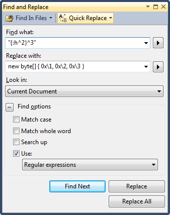

Regular expressions in \.NET
The String class in .NET provides plenty of methods for dealing with text. But when they fall short we can turn to the Regex class.
bool valid = Regex.IsMatch(identifier, @"^[a-z][a-z0-9]*$");
string episode = Regex.Match(filename, @"S\d{2}E\d{2}").Groups[0].Value;
Match match = Regex.Match(url, @"^http://(?<domain>[^:]+):(?<port>[0-9]+)");
if (match.Success)
{
string domain = match.Groups["domain"].Value;
string port = match.Groups["port"].Value;
}
MatchCollection matches = Regex.Matches(users, @" (\w+),?");
foreach (Match match in matches)
{
string user = match.Groups[1].Value;
}
Match match = Regex.Match(users, @"Users: ((\w+)(, )?)*");
foreach (Capture capture in match.Groups[2].Captures)
{
string user = capture.Value;
}The syntax for regular expressions in .NET is fairly standard. Character classes uses Unicode unless you pass the ECMAScript flag. Remember to escape backslashes or use verbatim string literals. The last example uses captures, which is a way to get history when multiple matches are made.
Regex regex = new Regex(@"^\d{4}-\d{2}-\d{2} \d{2}:\d{2}:\d{2} (.+)$",
RegexOptions.ECMAScript | RegexOptions.Compiled);
foreach (string line in log)
{
Match match = regex.Match(line);
if (!match.Success) { continue; }
string message = match.Groups[1].Value;
}The Regex methods can be called statically, like in the earlier examples, or the class can be instantiated as in the latter example. Since a regular expression have to be processed before it can be used it makes sense to reuse it. However, when used statically the Regex class uses an internal cache, so the static usage isn’t as bad as it may seem.
Regex objects can also be processed further by passing the Compiled flag. The regular expression is then turned into an assembly. This makes string matching faster but comes at a significant startup and memory cost. You can even go all out and turn a regular expression into a permanent assembly.
Regular expressions in Visual Studio
As useful as regular expressions are in code it can be even more useful as a tool when writing code. But for reasons unknown the syntax used in Visual Studio is very different from that in .NET. For example, tags are enclosed with { } instead of ( ), character classes are prefixed with : instead of \ and repetitions are expressed as ^n instead of {n}.